Candidate List 20260424 Previous Day Next Day Section 1: New Sources (age<1d) Cosmological Afterglow
Section 2: Old (1-5d) sources observed last night placeholder
Section 1: New Afterglow/FBOT Cands Last Night (2)
1. ZTF26aatzrft (Afterglow?) [Back to Top] [Share] [Trigger Swift] [Fritz ] [Lasair ]RA, Dec: 163.1522, 22.93168 10h52m36.53s, 22d55m54.04sGalactic (l, b): 215.18846, 62.82187 ext(g-r) = 0.02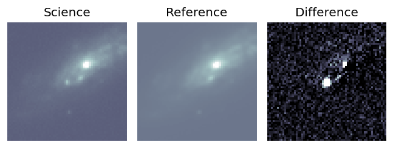
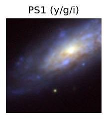
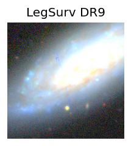
LegacySurvey: 1 sources in 3 arcsec Closest: d = 6.46 arcsec, 4.9 deg (east of north) photoz=0.01 (68% bounds 0.01, 0.02), type=PSF peak abs mag = -15.77 (68% bounds -14.63, -17.02) 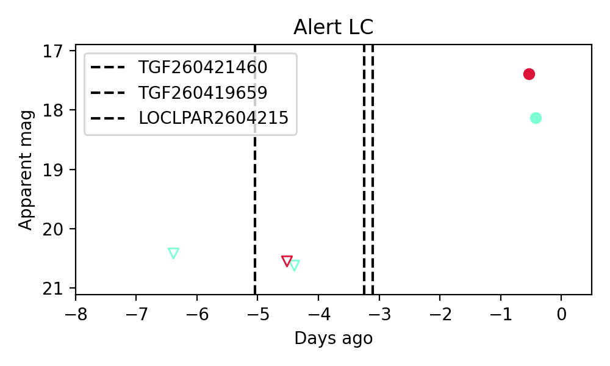
Consistent with synchrotron, g-r>0!
2. ZTF26aaudvop (Afterglow?) [Back to Top] [Share] [Trigger Swift] [Fritz ] [Lasair ]RA, Dec: 274.96389, 10.19719 18h19m51.33s, 10d11m49.87sGalactic (l, b): 38.55083, 11.59841 ext(g-r) = 0.218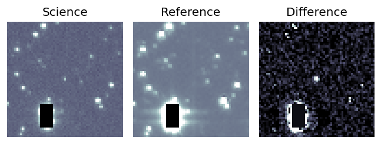
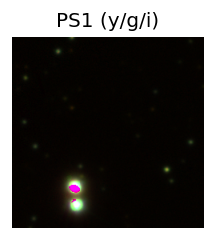
PS1: 1 source in 3 arcsec Closest: d = 7.93 arcsec photoz=0.68+/-0.33 peak abs mag = -23.83 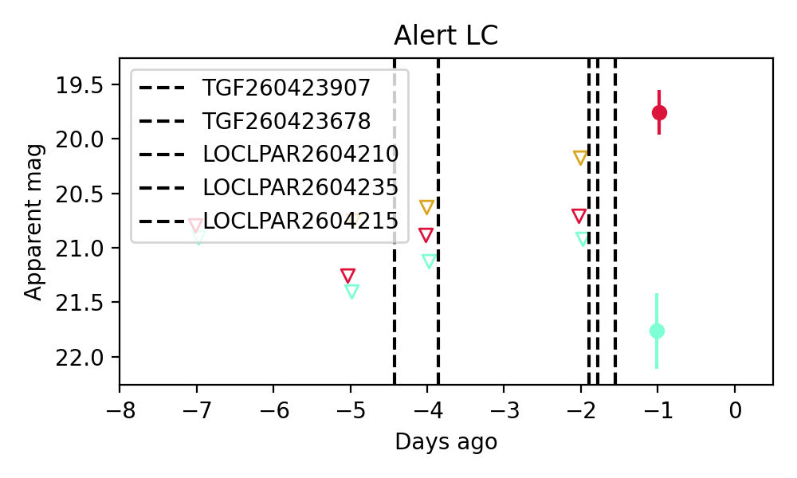
Consistent with synchrotron, g-r>0!
Section 2: Older Sources Observed Last Night (15)
0. ZTF26aatbvvn (Afterglow?) [Back to Top] [Share] [Trigger Swift] [Fritz ] [Lasair ]RA, Dec: 268.2875, 11.04177 17h53m9.00s, 11d 2m30.38sGalactic (l, b): 36.41723, 17.88481 ext(g-r) = 0.268PS1: 1 source in 3 arcsec Closest: d = 8.70 arcsec photoz=0.52+/-0.07 peak abs mag = -24.79
1. ZTF26aatgpuf (Afterglow?) [Back to Top] [Share] [Trigger Swift] [Fritz ] [Lasair ]RA, Dec: 294.98281, 11.11335 19h39m55.87s, 11d 6m48.05sGalactic (l, b): 48.40192, -5.48103 ext(g-r) = 0.568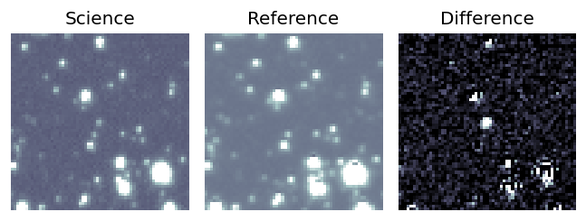
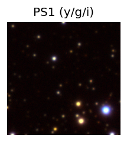
PS1: 1 source in 3 arcsec Closest: d = 3.17 arcsec photoz=0.64+/-0.09 peak abs mag = -27.14 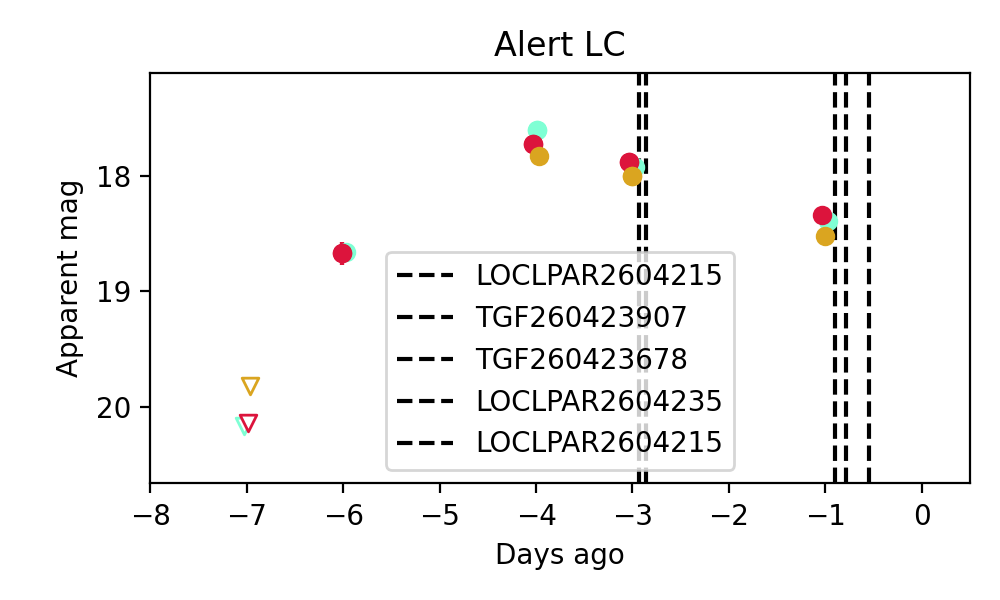
2. ZTF26aathdoe (Afterglow?) [Back to Top] [Share] [Trigger Swift] [Fritz ] [Lasair ]RA, Dec: 87.53759, 45.17703 5h50m9.02s, 45d10m37.32sGalactic (l, b): 166.44122, 9.07034 ext(g-r) = 0.381
3. ZTF26aatljht (Afterglow?) [Back to Top] [Share] [Trigger Swift] [Fritz ] [Lasair ]RA, Dec: 152.72274, 45.94791 10h10m53.46s, 45d56m52.48sGalactic (l, b): 171.38087, 53.20769 ext(g-r) = 0.012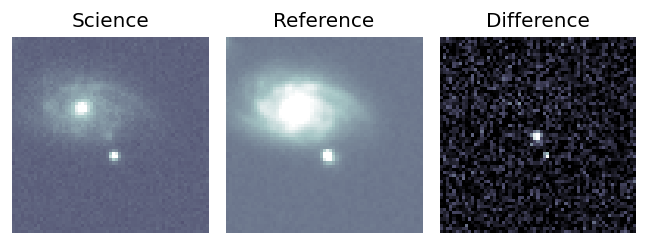
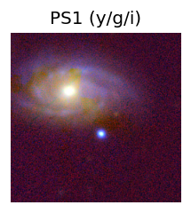
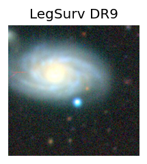
LegacySurvey: 1 sources in 3 arcsec Closest: d = 6.45 arcsec, 196.4 deg (east of north) photoz=0.03 (68% bounds 0.01, 0.05), type=PSF peak abs mag = -16.53 (68% bounds -13.31, -17.66) 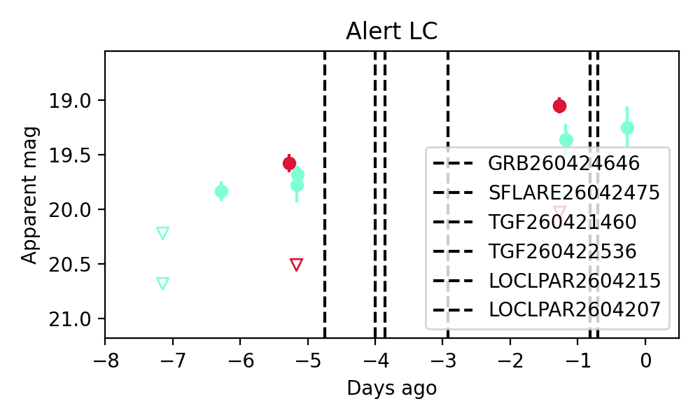
Consistent with synchrotron, g-r>0!
4. ZTF26aatlolu (FBOT?) [Back to Top] [Share] [Trigger Swift] [Fritz ] [Lasair ]RA, Dec: 210.2546, 5.44151 14h 1m1.10s, 5d26m29.43sGalactic (l, b): 343.40657, 62.71017 ext(g-r) = 0.031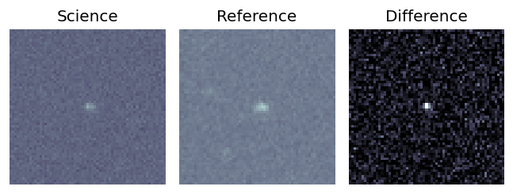
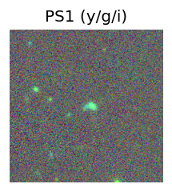
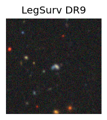
peak abs mag = -20.75 peak abs mag = -20.84 LegacySurvey: 1 sources in 3 arcsec Closest: d = 1.35 arcsec, 154.5 deg (east of north) photoz=0.06 (68% bounds 0.04, 0.18), type=SER peak abs mag = -18.42 (68% bounds -17.16, -20.84) 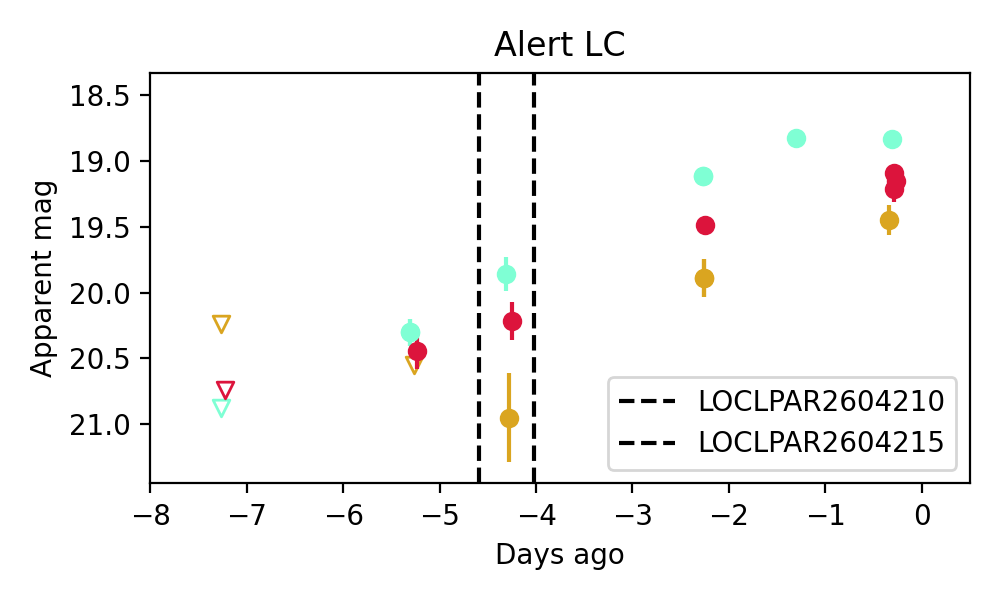
5. ZTF26aatloyt (Afterglow?) [Back to Top] [Share] [Trigger Swift] [Fritz ] [Lasair ]RA, Dec: 212.81829, -3.52066 14h11m16.39s, -3d-31m-14.37sGalactic (l, b): 338.16174, 53.79937 ext(g-r) = 0.067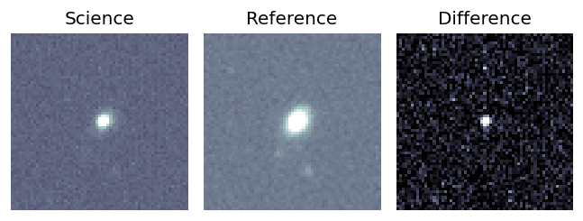
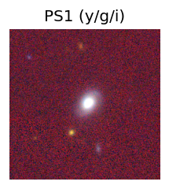
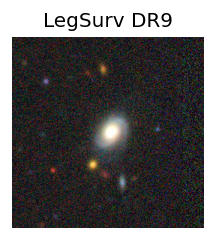
LegacySurvey: 1 sources in 3 arcsec Closest: d = 1.23 arcsec, 269.8 deg (east of north) photoz=0.07 (68% bounds 0.06, 0.09), type=SER peak abs mag = -18.53 (68% bounds -18.08, -19.06) 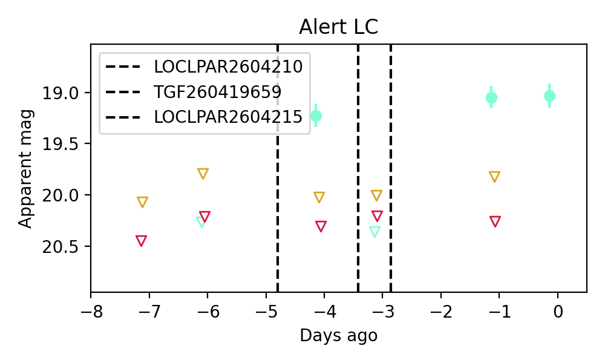
6. ZTF26aatpmfa (FBOT?) [Back to Top] [Share] [Trigger Swift] [Fritz ] [Lasair ]RA, Dec: 216.71608, 60.40887 14h26m51.86s, 60d24m31.93sGalactic (l, b): 103.55857, 52.98176 ext(g-r) = 0.013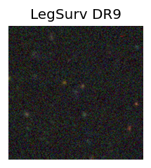
peak abs mag = -24.82 LegacySurvey: 1 sources in 3 arcsec Closest: d = 0.23 arcsec, 351.1 deg (east of north) photoz=0.86 (68% bounds 0.53, 1.15), type=REX peak abs mag = -25.66 (68% bounds -24.39, -26.44)
7. ZTF26aatqczh (Afterglow?) [Back to Top] [Share] [Trigger Swift] [Fritz ] [Lasair ]RA, Dec: 334.9169, 15.73396 22h19m40.06s, 15d44m2.27sGalactic (l, b): 77.71979, -33.49891 ext(g-r) = 0.056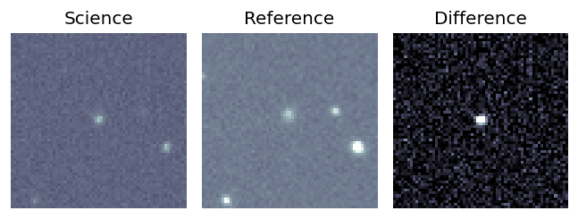
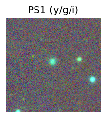
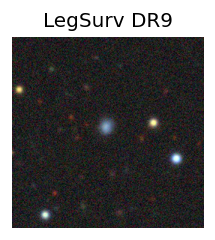
peak abs mag = -18.86 LegacySurvey: 1 sources in 3 arcsec Closest: d = 1.95 arcsec, 18.8 deg (east of north) photoz=0.06 (68% bounds 0.04, 0.09), type=EXP peak abs mag = -18.71 (68% bounds -17.59, -19.54) 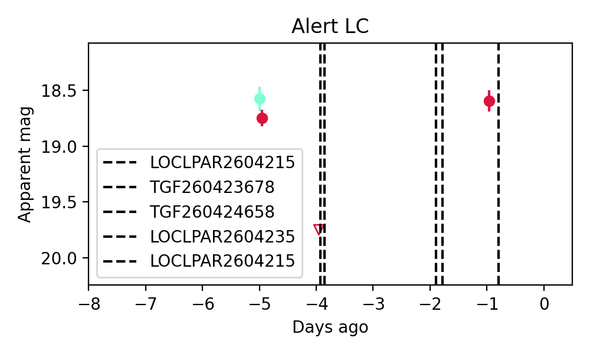
8. ZTF26aattcrm (FBOT?) [Back to Top] [Share] [Trigger Swift] [Fritz ] [Lasair ]RA, Dec: 211.62989, 25.68781 14h 6m31.17s, 25d41m16.10sGalactic (l, b): 32.28319, 73.1424 ext(g-r) = 0.015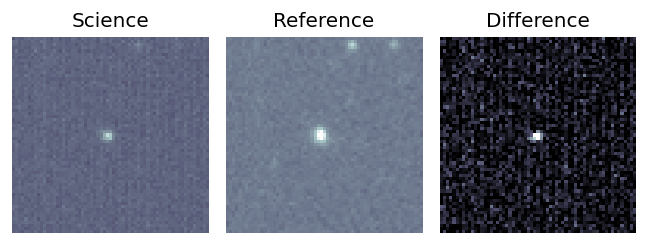
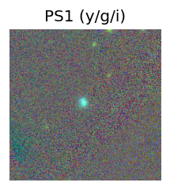
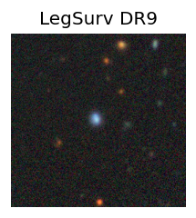
peak abs mag = -19.51 LegacySurvey: 1 sources in 3 arcsec Closest: d = 1.01 arcsec, 65.1 deg (east of north) photoz=0.12 (68% bounds 0.09, 0.14), type=SER peak abs mag = -19.37 (68% bounds -18.53, -19.73) 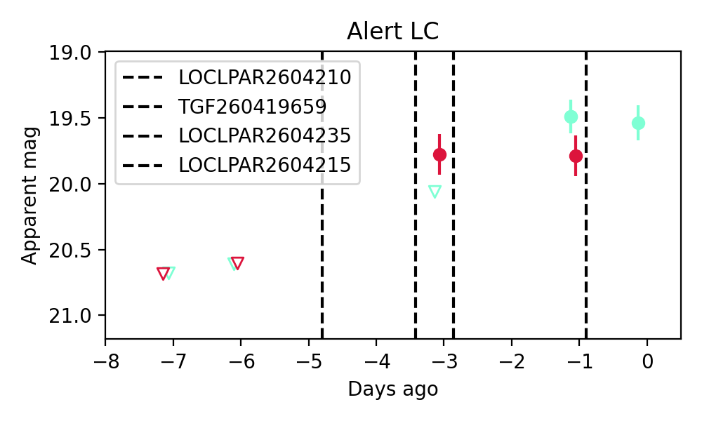
9. ZTF26aatzfet (FBOT?) [Back to Top] [Share] [Trigger Swift] [Fritz ] [Lasair ]RA, Dec: 168.30482, 19.81379 11h13m13.16s, 19d48m49.64sGalactic (l, b): 225.6895, 66.36833 ext(g-r) = 0.026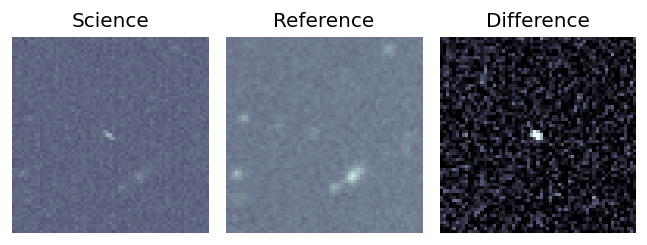
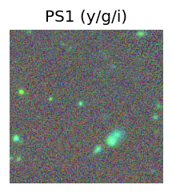
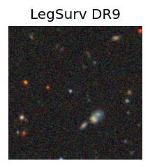
LegacySurvey: 1 sources in 3 arcsec Closest: d = 1.16 arcsec, 270.7 deg (east of north) photoz=1.07 (68% bounds 0.79, 1.43), type=PSF peak abs mag = -25.17 (68% bounds -24.37, -25.95) 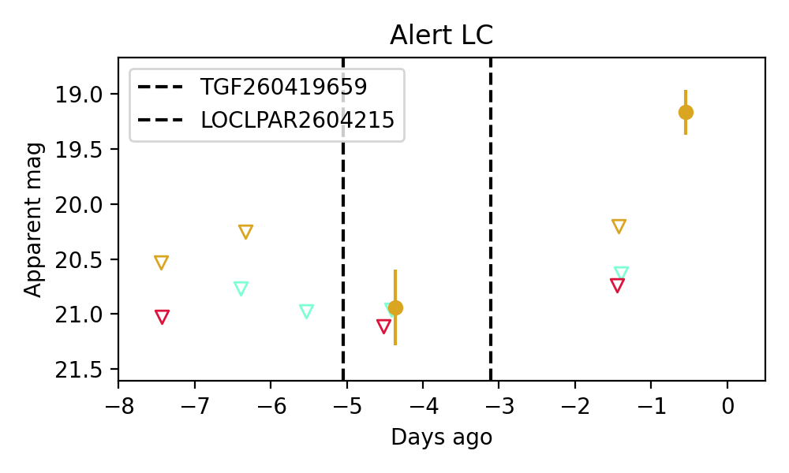
10. ZTF26aauaujs (FBOT?) [Back to Top] [Share] [Trigger Swift] [Fritz ] [Lasair ]RA, Dec: 142.92917, 44.82309 9h31m43.00s, 44d49m23.14sGalactic (l, b): 175.25434, 46.70094 ext(g-r) = 0.024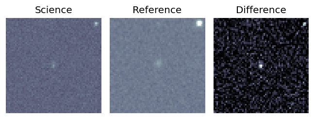
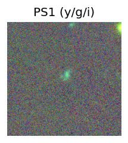
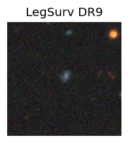
peak abs mag = -19.69 LegacySurvey: 1 sources in 3 arcsec Closest: d = 1.93 arcsec, 323.8 deg (east of north) photoz=0.12 (68% bounds 0.07, 0.16), type=EXP peak abs mag = -19.15 (68% bounds -17.81, -19.77) 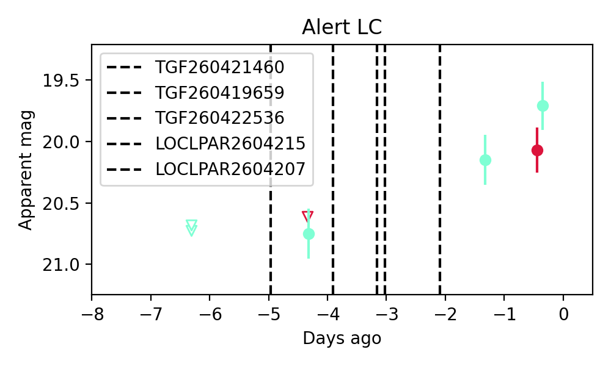
11. ZTF26aaubove (Afterglow?) [Back to Top] [Share] [Trigger Swift] [Fritz ] [Lasair ]RA, Dec: 224.50446, 5.46301 14h58m1.07s, 5d27m46.83sGalactic (l, b): 2.91879, 52.90439 ext(g-r) = 0.044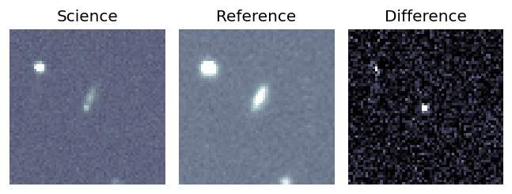
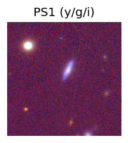
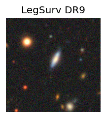
peak abs mag = -18.68 LegacySurvey: 1 sources in 3 arcsec Closest: d = 0.63 arcsec, 30.0 deg (east of north) photoz=0.04 (68% bounds 0.02, 0.15), type=PSF peak abs mag = -16.68 (68% bounds -14.79, -19.77) 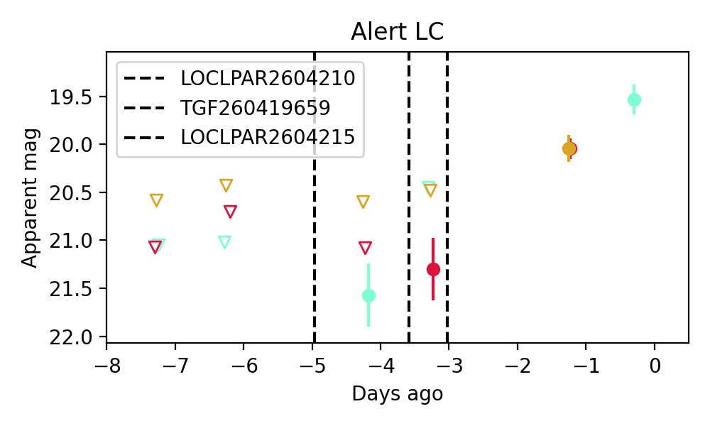
Consistent with synchrotron, g-r>0!
12. ZTF26aaudimj (Afterglow?) [Back to Top] [Share] [Trigger Swift] [Fritz ] [Lasair ]RA, Dec: 272.9986, -15.63024 18h11m59.66s, -15d-37m-48.88sGalactic (l, b): 14.56625, 1.37093 ext(g-r) = 2.548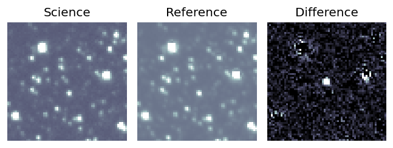
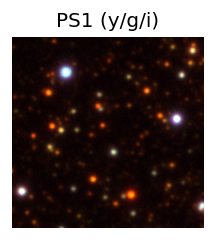
PS1: 1 source in 3 arcsec Closest: d = 0.21 arcsec photoz=0.18+/-0.18 peak abs mag = -25.91 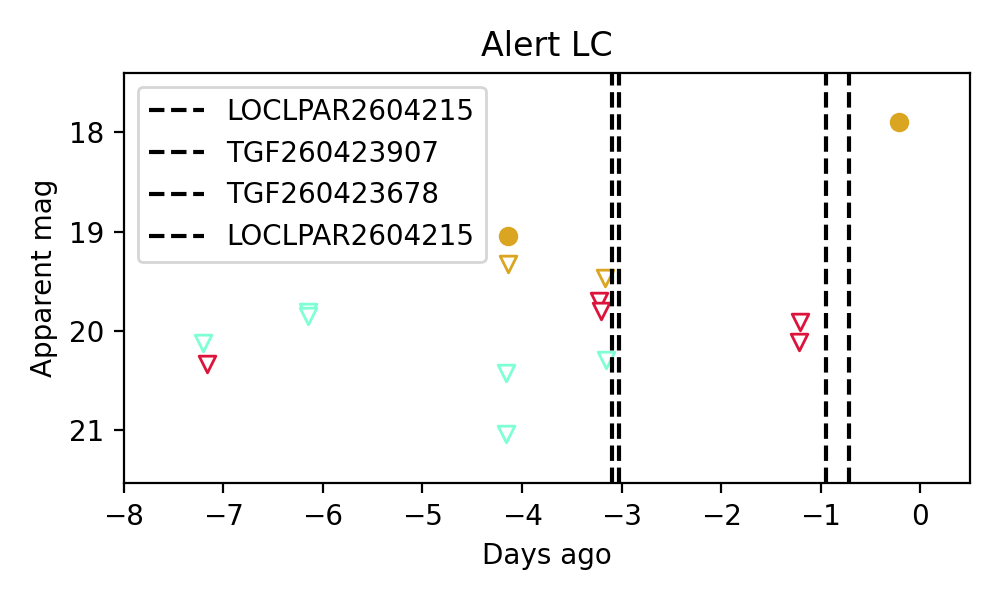
13. ZTF26aaudrvy (Afterglow?) [Back to Top] [Share] [Trigger Swift] [Fritz ] [Lasair ]RA, Dec: 251.68914, 49.04142 16h46m45.39s, 49d 2m29.10sGalactic (l, b): 75.62271, 40.26393 ext(g-r) = 0.024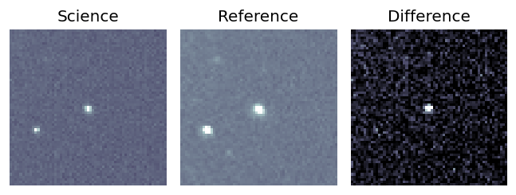
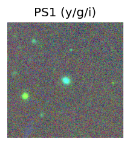
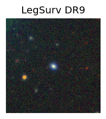
peak abs mag = -18.65 LegacySurvey: 1 sources in 3 arcsec Closest: d = 0.71 arcsec, 203.8 deg (east of north) photoz=0.09 (68% bounds 0.06, 0.11), type=SER peak abs mag = -18.63 (68% bounds -17.62, -19.09) 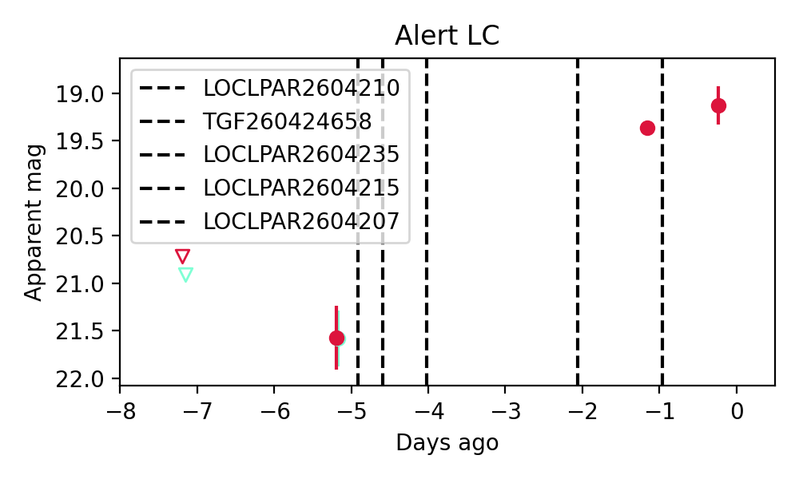
Consistent with synchrotron, g-r>0!
14. ZTF26aauefkg (Afterglow?) [Back to Top] [Share] [Trigger Swift] [Fritz ] [Lasair ]RA, Dec: 1.70751, 38.17716 0h 6m49.80s, 38d10m37.76sGalactic (l, b): 113.36175, -23.86423 ext(g-r) = 0.102